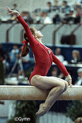
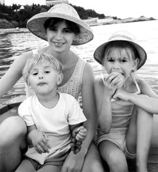

Oksana Omelianchik (USSR)
1985 World AA and FX Champion
1985 European B Champion
1986 World Cup B Champion
|
 |
 |
| Omelianchik
in 1985... |
and in 2005
with children Vanya and Nastia. |
Medal Total
- World Championships: 3
Gold, 1 Silver
- World Cup: 1 Gold, 2
Silver, 2 Bronze
- European Championships: 1
Gold, 1 Silver, 2 Bronze
Oksana was born on January
2, 1970 (or December 31, 1969, according to some sources) in Ulan-Ude. By
age 2, she had moved to Kiev (her father was in the army). Oksana started
training in figure skating at age 5 and took part in her first competition a
year later. The skating choreographer saw a future in gymnastics for
Oksana, and proposed a change of sport. She loved gymnastics from the
start. Oksana trained at Spartak Kiev with coaches Valentina Panchenko and
Valery Tupitsy. Later, Leonid Eidelman and his wife, Galina Perskaya, came to
Kiev from Poltava and took over. Perskaya herself was a former
gymnast. Omelianchik was best
known for her expressive floor exercise routines, featuring wonderful dance and
intricate tumbling. In 1988, she was passed over for a spot on the Olympic
team, becoming the alternate.
Today Oksana is married, has 2 children (daughter
Anastasia and son Ivan), and lives in Kiev. She's a coach, choreographer and judge.
Competition Results
- 1981
- Jr. USSR Championships: 1st AA (Candidate for Master)
-
- 1982
- All-Union Youth Sporting Games: 1st AA, 1st UB, 1st FX (Candidate for Master)
- Jr. USSR Championships: 2nd AA, 1st UB, 2nd B, 3rd FX
-
- 1983
- Jr. Friendship Tournament (Druzhba): 1st Team, 4th
AA, 1st UB, 1st FX
Ukrainian Spartakiade: 2nd AA, 1st UB
- USSR Championships: 5th AA, 6th B
-
- 1984
- Jr. USSR Championships: 2nd UB
- Moscow News: 5th AA, 3rd UB
- USSR Championships: 4th AA, 3rd FX, 4th
UB, 4th B
USSR Cup: 7th AA
-
- 1985
- All-Union Youth Sporting Games: 1st AA
- European Championships: 3rd AA, 1st
B, 2nd FX, 3rd UB, 5th V
- Moscow News: 2nd AA, 1st B, 1st FX
- Rome Grand Prix: 1st AA
USSR Championships: 1st AA, 2nd B, 2nd FX
USSR Cup: 4th AA
- World Championships (Montreal): 1st Team, 1st
AA, 1st FX
-
- 1986
- Goodwill Games: 1st Team, 3rd AA, 2nd FX
- Kraft International: 12th AA, 1st B
USSR Championships: 2nd UB, 4th FX
- USSR Cup: 7th AA, 2nd UB
- World Cup: 1st B, 2nd V, 2nd UB, 3rd AA, 3rd FX
- World Sports Fair: 1st AA, 1st UB, 1st B, 1st FX
-
- 1987
- USSR Championships: 6th AA, 3rd FX, 4th
B, 5th UB
- USSR Cup: 3rd AA, 3rd FX
- World Championships (Rotterdam): 2nd Team,
5th AA
-
- 1988
- Kraft International: 3rd AA, 1st FX, 2nd
B
- USA-USSR Dual Meet: 1st Team, 3rd AA
- USSR Championships: 4th AA, 2nd FX, 3rd
B, 6th V
- USSR Cup: 8th AA
-
- 1989
- USSR Cup: 22nd AA, 2nd FX
- This page was last updated on May 16, 2026.
© Gymn Forum